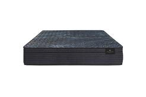
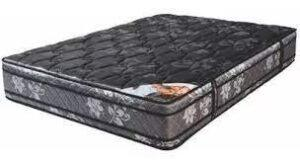
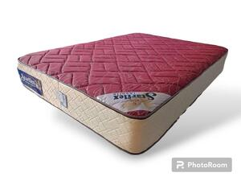
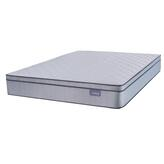

Los Mejores Colchones del mercado
Colchones de Espuma / Pluma

Espuma Starflex
Tipo: Fabricado con espuma de alta calidad, proporciona un soporte firme y cómodo.
Tela: Tejido Jackard Belga, suave y resistente.
Altura: 27 cm de puro confort.

Espuma Cannon
Tipo: Espuma de alta calidad con densidad de 30 kg/m³.
Tela: Jackard Belga durable y suave.
Altura: 30 cm de superficie generosa.
Colchones con Resortes

Starflex Resorte
Resortes: Bicónicos para una distribución uniforme del peso.
Tela: Revestido en tela Jackard de gran durabilidad.
Altura: 28 cm con sensación de robustez.

Cannon Resorte
Pillow: Manta de espuma superior que aporta extra suavidad.
Resortes: Estructura Bonnell en forma de reloj de arena para mayor estabilidad.